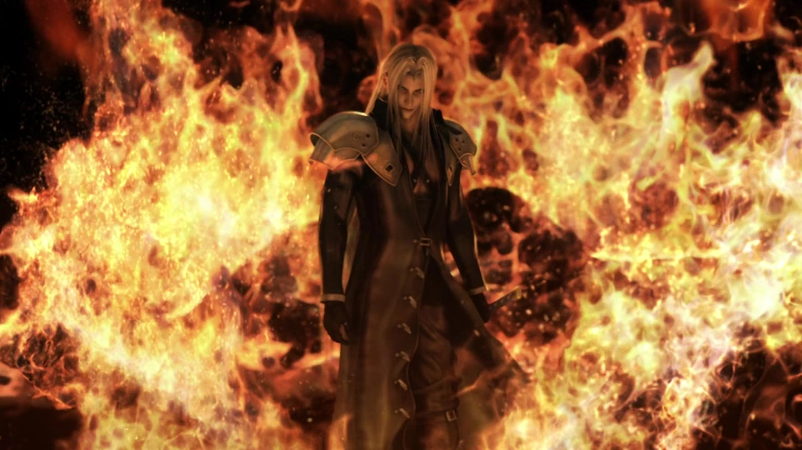
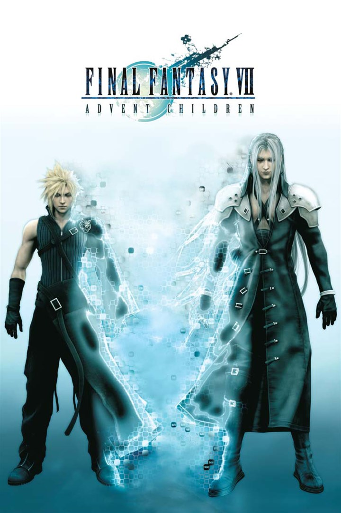
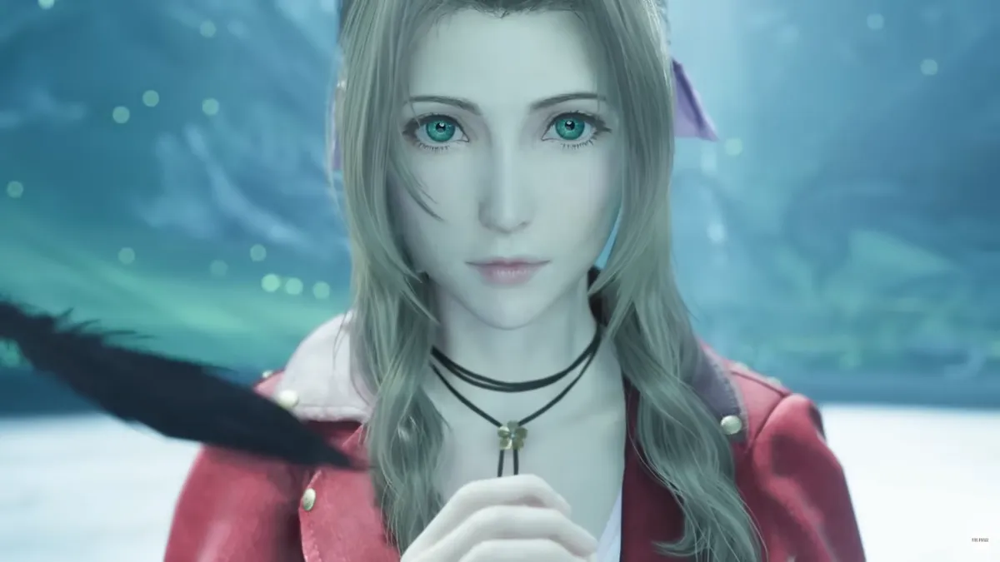

Sephiroth fez parte da SOLDIER, que era um grupos especial de soldados, ele foi visto como um grande herói durante a guerra contra Wutai. Nessa época a Shinra estava em guerra com esse pais, alguns anos depois, Sephiroth foi a uma missão até a cidade de Nibelheim, a cidade natal do Cloud, que estava acompanhando ele nessa missão. Nesse dia Sephiroth descobre que ele era um clone de um alien chamado Jenova, e que ele foi a cópia que chegou mais perto de da perfeição, isso deixa ele louco e acaba queimando a cidade de Nibelheim. Com isso ele se torna o maior vilão da história. Com sua ligação a Jenova, ele corrompe o planete como se fosse um câncer matando o planeta de dentro pra fora. Por causa de um acidente envolvendo o Claude, ele acaba tendo celulas de Jenova em seu corpo, todos que tem essas celulas podem ser controladas por Sephiroth(Isso é mais visível no Final Fantasy 7 Remake e Rebirth). O objetuvo do Sephiroth, no original, é matar todos com a black materia, assim, a alma de todos vão se junta ao planeta, então todos farão parte do mesmo ser vivo, e Sephiroth vai renacer como um Deus.

Advent Children
Em 2005 é lançado o filme de Final Fantasy 7, que foi conhecido como Final Fantasy VII Advent Children, e foi considerado uma das animações mais lindas na época. Esse filme se passa depois dos acontecimentos do Final Fantasy 7, e mesmo depois de derrotado o Sephiroth ainda é o vilão da história.

REBIRTH
Em Final Fantasy 7 Rebirth, o Sephiroth continua cendo o vilão, isso porque esse "Rebirth" é um remake do orininal, mas com muita coisa diferente, de alguma forma o Sephiroth sabe todos os acontecimentos do jogo original e sabe como vai perder, e a partir desse ponto muitas coisas são alteradas dos acontecimentos originais, por causa da ligação dele com Jenova, ele conseguio se liga ao sangue do planeta e com isso corrompendo tudo, e de alguma forma isso acaba ligando o Sephiroth a várias linha do tempo de inúmeros universos. E agora seu objetivo é diferente, a "reunião" agora é a reunião dos úniversos para que toda vida axista em um lugar, e assim apagando qualquer chanse de ele perder. Nessa história a Aerith também sabe sobre o futuro, por causa da ligação dela com o planeta, por isso ela é a unica pessoa que pode para o Sephiroth por causa da holy materia que ela tem, e por isso que o Sephiroth mata ela.

REFERÊNCIAS E INSPIRAÇÕES
Sephiroth tem muitas inspirações por tras dentre elas estão: o lendário samurai Miyamoto Musashi, a forma final dele é inspirada no anjo Seraphim, e na Arvore da Vida ou também conhecido como Caminho de Sephiroth. A referencia de Miyamoto Musashi é por causas do fato de ele ser o mais forte e um "samurai" e por causa da sua espada que é a Masamune (Tem um perconagem no Final Fantasy 8 que tem uma réplica da espada dele chamada de Murasame, assim como réplica de outras armas). Sephiroth também tem uma inspirado na "Arvore da Vida", também conhecido como "Caminho de Sephiroth", essa arvore é um caminho pra se tornar Deus, que possue 3 caminhos, o caminho da esquerda representa a força reprimida, que está relacionado a mulher, o caminho da direita, é a força liberada, que representa o homen, e o caminho do meio é o equilíbrio entre os dois. Já a inspiração do anjo, o Sephiroth no final do jogo, ele consegue se tornar Deus, e a aprencia dele leva a visão original de anjos.